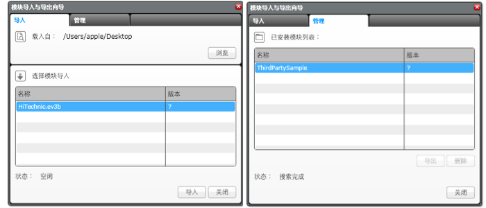

					<table cellpadding="0" cellspacing="0" border="0"><tbody><tr><td>
	
						<h1>模块导入<a name="top"></a></h1>
		<div id="block_1188" class="block blockStep">
		<div class="title"></div>
		<div class="description">LEGO 之外的制造商创建了可以与 EV3 程序块一起使用的传感器和附加设备。通常可以下载它们创建的自定义编程模块并在 EV3 编程环境中用于其产品。  <br>
<br>
<br>
<br>
<br>
<br>
导入外部模块需要四个步骤。</div>
	</div>
	<div id="block_1189" class="block blockTable bullets">
		<table class="blockTable">
		
<tbody><tr><td>1.</td><td>将模块文件从制造商的网站下载到计算机。如果是压缩的 .zip 文件，请将内容提取到计算机上的某个文件夹中。记下提取的文件夹的位置。如果不是 .zip 文件，则按照制造商的说明操作。 </td></tr><tr><td>2.</td><td>从“工具”菜单中选择“模块导入工具” </td></tr><tr><td>3.</td><td>单击“浏览”按钮以找到将文件提取到的文件夹，然后单击“确定”。 </td></tr><tr><td>4.</td><td>会向您展示与最初下载的文件相关的模块列表。选择要导入的模块。单击“导入”以完成该过程。 </td></tr>		</tbody></table>
	</div>
	<div id="block_1190" class="block blockStep">
		<div class="title"></div>
		<div class="description">新导入的模块所位于的面板由制造商确定，会在安装过程中自动进行。</div>
	</div>
	
			<div id="quick">
				<div class="header"><a href="./index.html?id=BlockImport#header">模块导入</a></div>
					<div class="quickText">快速链接</div>
					
					<ul>
						</ul>
			</div>
	
	</td></tr></tbody></table>